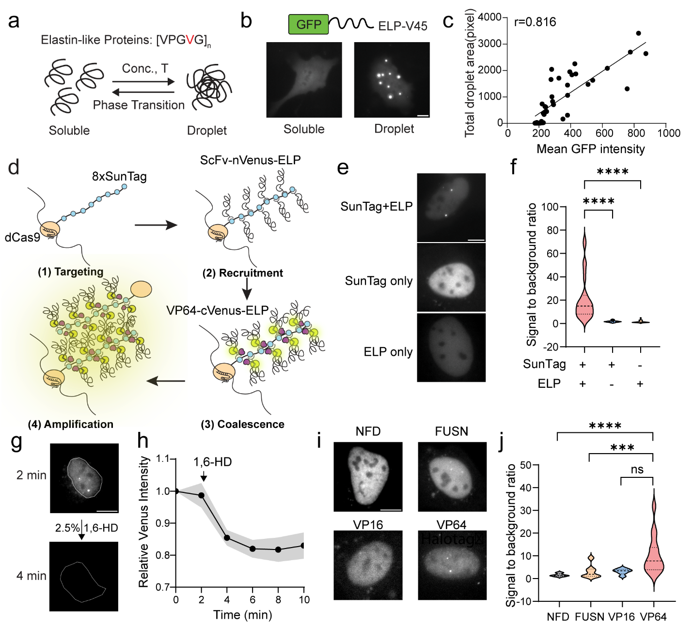
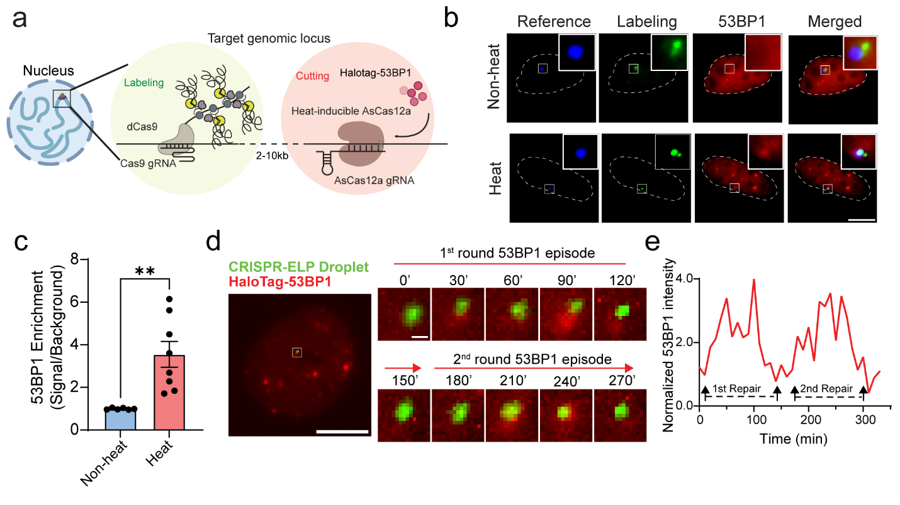
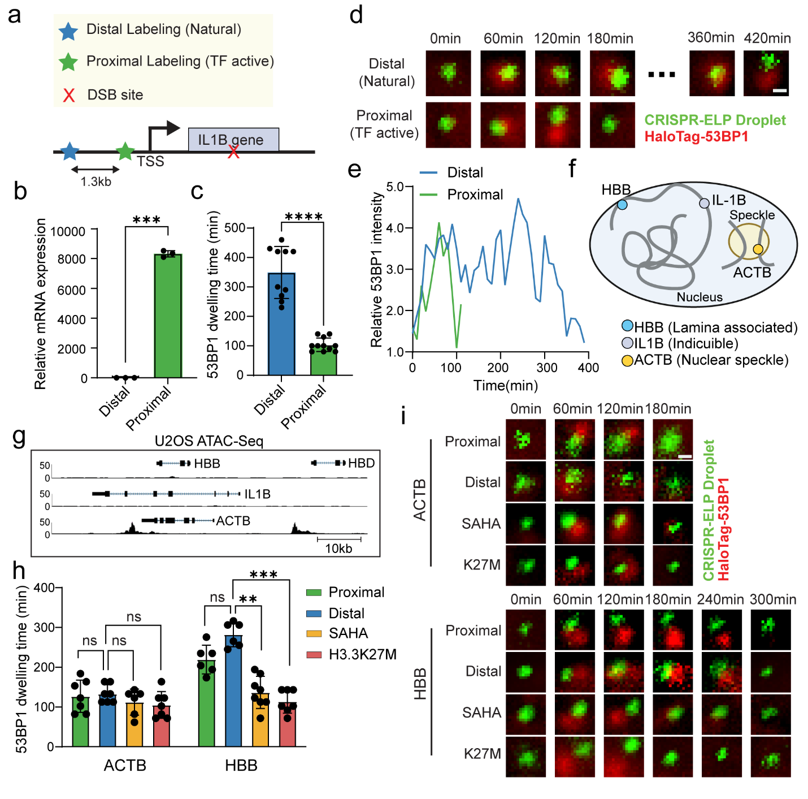
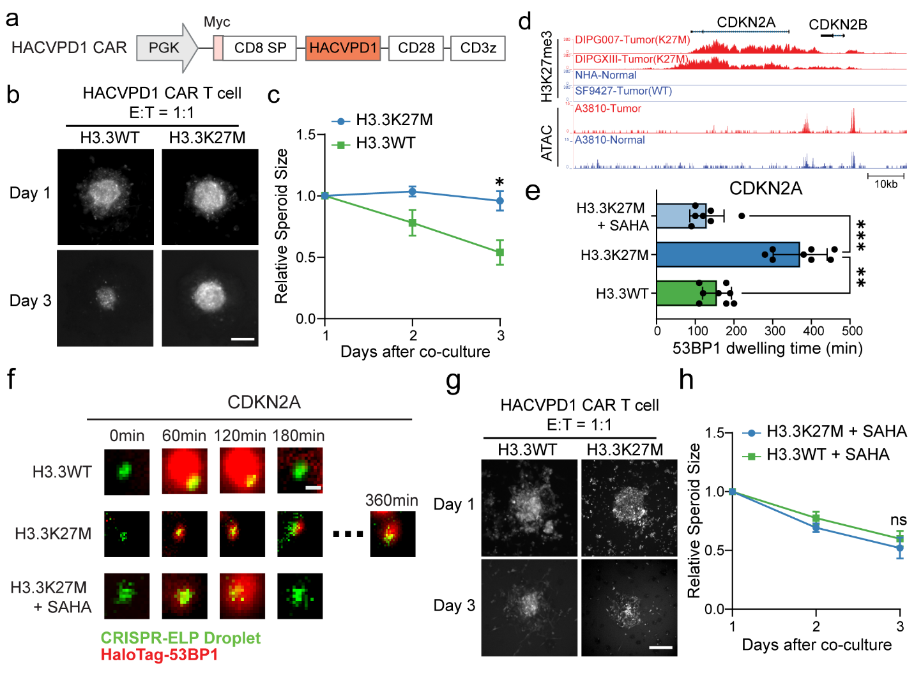

GLIDRE: Watching DNA Repair at Specific Genomic Loci
Research theme: Observe — live-cell molecular imaging and DNA repair
Manuscript status: Under revision (confirm public disclosure before publishing figures)
The challenge
Traditional DNA damage assays provide valuable endpoints but have difficulty tracking the damage response at a defined, non-repetitive genomic locus in the same living cell over time. GLIDRE (Genomic Locus Imaging and DSB Repair Monitoring by Elastin-like Proteins) was developed to provide locus-specific visualization combined with a dynamic repair-associated readout.
Discovery 1 — Amplifying signals at non-repetitive genomic loci

Approach. Engineered dCas9–SunTag complexes recruit elastin-like protein assemblies to the genomic target. Condensate-associated signal amplification makes non-repetitive loci accessible to live-cell observation.
Key finding. The strategy provides an optical handle for following specified genomic sites and pairing locus tracking with induced DNA damage.
Discovery 2 — Measuring local DNA damage responses in real time

Approach. Orthogonal AsCas12a induces DNA double-strand breaks near labeled loci, while recruitment and residence of the DNA damage response factor 53BP1 are monitored in living cells.
Key finding. GLIDRE supports time-resolved, locus-specific assessment of repair-associated dynamics. Importantly, 53BP1 residence is a proxy for the response rather than a direct measurement of completed repair.
Discovery 3 — Chromatin state influences repair-associated kinetics and therapy response


Key finding. More accessible chromatin generally exhibited shorter 53BP1 residence than compacted chromatin, with transcription contributing in a context-dependent manner. In engineered H3.3K27M U2OS models, altered locus-specific dynamics accompanied reduced CAR T-cell response; SAHA treatment shifted the observed dynamics and increased spheroid sensitivity.
Live imaging video
Video placeholder: when your GLIDRE video is available, put a compressed .mp4 in research/videos/ and embed it here:
Why it matters
GLIDRE connects molecular imaging with a functional, chromatin-aware view of the DNA damage response, providing a framework for testing how local genomic context influences cellular resilience and treatment response.